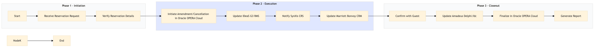

| Role | Steps |
|---|---|
| Front Desk Agent | 1.1 1.2 3.1 3.3 |
| Revenue Manager | 2.1 2.2 2.3 2.4 3.2 |
| Step | Name | Role | System | Input | Output | KPI | Dec? | Exc? | Pain Point / Risk |
|---|---|---|---|---|---|---|---|---|---|
| 1.1 | Receive Reservation Request | Front Desk Agent | Oracle OPERA Cloud | Guest request via phone, email, or in-person | Reservation request logged in Oracle OPERA Cloud | Less than 2 minutes for logging the request | Y | N | Handling multiple requests simultaneously |
| 1.2 | Verify Reservation Details | Front Desk Agent | Oracle OPERA Cloud | Reservation details from Oracle OPERA Cloud | Confirmed reservation details | Less than 1 minute for verification | N | Y | Incorrect or outdated information |
| 2.1 | Initiate Amendment/Cancellation in Oracle OPERA Cloud | Front Desk Agent | Oracle OPERA Cloud | Confirmed reservation details | Amendment or cancellation initiated in Oracle OPERA Cloud | Less than 3 minutes for initiation | Y | N | System downtime affecting operations |
| 2.2 | Update IDeaS G3 RMS | Revenue Manager | IDeaS G3 RMS | Amendment or cancellation details from Oracle OPERA Cloud | Updated reservation status in IDeaS G3 RMS | Less than 2 minutes for update | N | Y | Data synchronization issues between systems |
| 2.3 | Notify SynXis CRS | Revenue Manager | SynXis CRS | Updated reservation status from IDeaS G3 RMS | Reservation status updated in SynXis CRS | Less than 1 minute for notification | N | Y | Delayed updates affecting online availability |
| 2.4 | Update Marriott Bonvoy CRM | Revenue Manager | Marriott Bonvoy CRM | Reservation status from SynXis CRS | CRM record updated with new reservation details | Less than 2 minutes for update | N | Y | Inaccurate CRM data leading to missed opportunities |
| 3.1 | Confirm with Guest | Front Desk Agent | Oracle OPERA Cloud | Updated reservation status from Marriott Bonvoy CRM | Guest confirmation of amendment or cancellation | Less than 1 minute for confirmation | Y | N | Handling guest dissatisfaction |
| 3.2 | Update Amadeus Delphi.fdc | Revenue Manager | Amadeus Delphi.fdc | Guest confirmation from Oracle OPERA Cloud | Reservation status updated in Amadeus Delphi.fdc | Less than 2 minutes for update | N | Y | Integration issues with external systems |
| 3.3 | Finalize in Oracle OPERA Cloud | Front Desk Agent | Oracle OPERA Cloud | Updated reservation status from Amadeus Delphi.fdc | Reservation amendment or cancellation finalized in Oracle OPERA Cloud | Less than 1 minute for finalization | N | Y | Data integrity issues post-finalization |
| 3.4 | Generate Report | Revenue Manager | Oracle OPERA Cloud | Finalized reservation status from Oracle OPERA Cloud | Reservation amendment/cancellation report | Less than 2 minutes for report generation | N | Y | Lack of comprehensive reporting tools |
This process outlines the steps for amending and cancelling reservations at a full-service Marriott hotel using Oracle OPERA Cloud PMS. It ensures seamless communication between various systems to maintain accurate guest records and optimize revenue management.